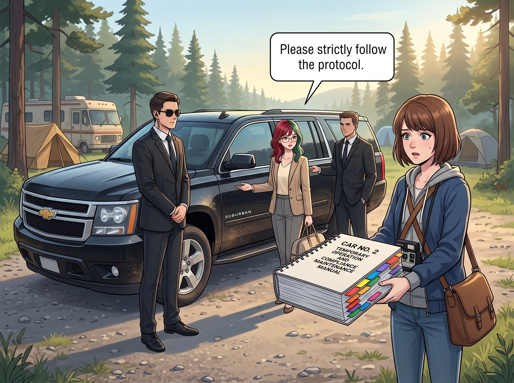

債務重組特遣隊

一切的起因，是上週五那通打給 David 的視訊電話。
Chloe 為了炫耀二號車廂的生存智慧，大嘴巴地把 Lily 如何用兩張發票和一份環境評估報告搞定一台發電機的事蹟，繪聲繪影地吹噓了一番。說者無心，聽者有意——David 轉頭就把這個行政天才推薦給了他在某家民間國防承包商裡焦頭爛額的老戰友。
星期一清晨，一輛黑色休旅車停在營地外。兩名穿著西裝的特派員客客氣氣地將 Lily 借調去西雅圖一週，協助處理一場帳目混亂的審計危機。
臨走前，Lily 把一本四百頁、用七種顏色標籤分類的《二號車廂臨時營運與合規維持手冊》交給 Max，只留下一句話：「請嚴格按照協議執行。」
一、戒斷的一週
前兩天，車廂裡洋溢著暴君倒台的狂歡。Chloe 把手冊墊在搖晃的桌腳下，把音響開到最大；Victoria 慶幸終於不用在喝咖啡時聽人匯報這杯咖啡的預算分類。反正廚房有 Kate 坐鎮，一日三餐照樣香氣四溢。
然後，那些平時根本沒人注意到的小事開始一件件出狀況。
合作專案的補給單要按時回填，沒人記得格式，送來的物資從新鮮食材縮水成了兩箱軍用口糧；太陽能板的逆變器跳了兩次警告燈，Chloe 修得好硬體，卻看不懂那份得寄回去的數據日誌；Victoria 畫廊的季度報稅期限逼近，平時 Lily 早就把單據整理成冊，現在全堆在她的平板裡，她對著一整個資料夾的收據發呆了一個下午。
沒有人生活不能自理。但每個人都第一次清楚看見，那個整天拿著電子板追人簽字的實習生，到底默默扛了多少東西。
「我收回之前的話。」第五天晚上，Victoria 裹著毯子，盯著那疊沒整理的收據，「我寧願她天天跟我算咖啡的預算。」
二、魔王歸來
第七天傍晚，休旅車把 Lily 送了回來。她眼底有淡淡的黑眼圈，米色針織衫依然一塵不染。
迎接她的是三張如釋重負的臉，以及一杯 Max 默默遞上的熱牛奶。
Lily 看了看桌腳下那本被翻得皺巴巴的手冊，沒有說什麼，只是坐到工作站前，花了整整一個晚上，把補給單、數據日誌和 Victoria 的報稅單據一件件理順。
直到深夜，她才轉過身，從公事包裡拿出一份表單，精準地放到 Chloe 面前。
「Chloe 學姐，鑑於您未經授權向外部機構洩露本營地的行政資源，導致我被徵用一百六十八小時。」Lily 推了推眼鏡，露出那抹熟悉的純潔微笑，「我已經按照承包商付給我的顧問時薪，將這段工時折算成您的內部債務。未來六個月，您的載具維修費與啤酒配額將被扣除百分之四十用於償還。請在這裡簽字。」
三、嘴砲技能的絕地反擊
Chloe 握著筆的手停在了半空中。
她看著那個足以讓她半年喝不到一滴好酒的數字，大腦裡的街頭求生引擎開始瘋狂超頻。上一次在發電機事件裡，她的嘴砲被這個實習生徹底拆解；但這一次，她發現了一個真正的破綻。
「等一下，實習生。」Chloe 啪地把筆拍在桌上，雙手撐著桌面，換上談判桌上的痞笑，「妳這筆帳算得有漏洞。妳這週為什麼會被借走？因為那邊有一堆事情，光靠文件搞不定，對吧？」
Lily 的手指微微一頓。
「我就知道。」Chloe 抓住這個停頓，開始畫餅，「妳能搞定報表、搞定合約，但如果要在泥地裡拆一台生鏽的機器呢？要搬一百磅的電池組呢？要爬到氣象站的屋頂上接線呢？妳這個連重型噴槍都拿不穩的辦公室白領，能嗎？」
她拍了拍自己結實的手臂：「妳的系統需要一個實體執行層，Lily。一雙能在物理世界裡幫妳幹粗活的手。只要妳免了這筆債，從今天起，老娘就是妳專屬的現場作業模組。鍵盤搞不定的，我用扳手幫妳搞定！」
站在一旁的 Max 聽到「粗活」「爬屋頂」這些詞，大腦裡的危險雷達瞬間嗶嗶作響。她太了解 Chloe 了，這傢伙為了賴帳什麼支票都敢開，最後一定會演變成某種在暴雨裡的體力勞動。
「那個……我的底片還沒沖洗，妳們先聊，我回暗房了……」Max 用相機擋著臉，貼著車廂邊緣試圖無聲撤退。
「想跑？！」Chloe 眼疾手快，一把揪住 Max 連帽外套的帽子，硬生生把她拽回身邊。
「Max 也是合約的一部分！」Chloe 毫不猶豫地拉女友下水，「妳做帳總需要現場照片存證吧？Max 就是我們的影像紀錄官！我負責拆，她負責拍，一條龍服務！」
「Chloe！我沒有答應要……」Max 掙扎了一下，但在 Chloe 那「妳敢走我就死給妳看」的眼神下，只能悲憤地閉上了嘴。
四、特殊附屬勞務契約
Lily 端著熱牛奶，目光在 Chloe 狂妄的笑臉和 Max 生無可戀的表情之間來回。
她不得不承認，這次 Chloe 說中了。這一週在西雅圖，她最頭痛的正是那些需要有人親自到現場、動手、搬運的環節——文件做得再漂亮，也沒辦法替她把一台機器從牆上拆下來。
「非常精彩的債務重組提案，Chloe 學姐。」Lily 放下杯子，刪掉原本的罰單，打開了一份新的範本，「我接受。債務取消。從現在起，您與 Max 學姐正式編入二號車廂現場作業與影像存證小組。」
她把一份剛印出來的三頁合約推到兩人面前。
「剛好有一件積壓的工作。三英里外的廢棄氣象站裡，有一台合作專案早年留下的舊信號中繼器，已經列入除役清單，按規定必須拆下主機板繳還，並附上現場照片完成除役手續。這件事我拖了兩個月，因為我一個人搬不動，也不想為了一塊主機板付外包的出勤費。」
Chloe 臉上的笑容僵住了：「等等……現在？外面在下暴雨，而且那是三英里的泥路！」
「是的，學姐。這就是您剛才承諾的實體執行層。」Lily 乖巧地遞過兩把雨傘、一套螺絲起子和一個防水收納箱，「當然，您也可以選擇恢復那百分之四十的預算扣除。」
Chloe 看了看手裡的工具，又看了看那份合約，終於意識到自己引以為傲的嘴砲，確實搶回了一點場子——但代價是把自己和 Max 一起賣成了這個營地最底層的現場苦力。
「算妳狠，實習生。」Chloe 咬牙切齒地接過雨傘，一把拉起還在嘆氣的 Max，「走吧，紀錄官，我們去給魔鬼大人拆鐵箱子。」
Max 穿著 Victoria 送的那雙三千五百美金羊絨靴，抱著套了鈦合金護甲的無螢幕相機，生無可戀地跟著 Chloe 走進了奧林匹亞半島的暴雨中。
Lily 喝完最後一口牛奶，在備忘錄上寫下：
『行政法則補充條款：永遠不要拒絕一個主動要求加班的員工。只需要給她換一個更好聽的職稱。』